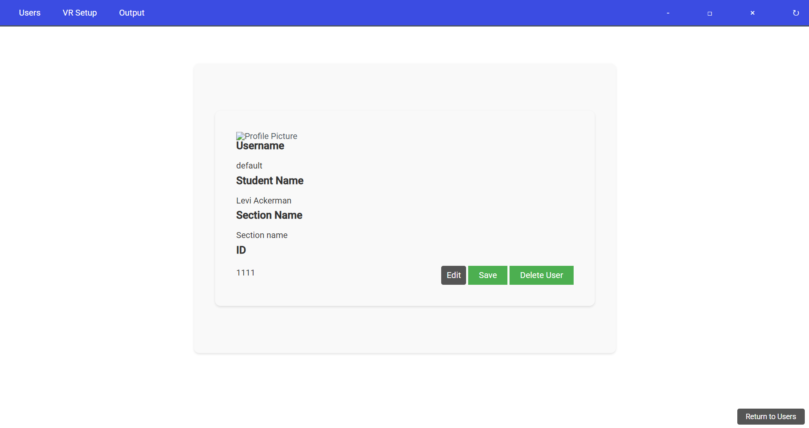
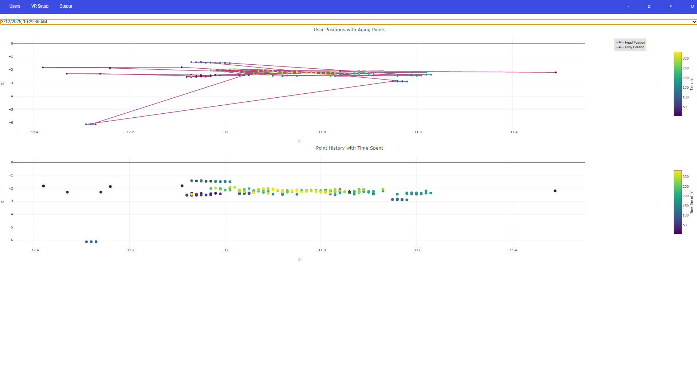

Evaluating Forensics Professors' Needs with the ForensicsXR Teacher's App
- Role: UI/UX + Web Developer
- Tools: Unity, JavaScript, HTML, CSS
- Team: 1 design researcher, 2 developers, 1 forensic expert
The Problem
- Teachers need a way to evaluate students.
- Teachers need to see the work their students are doing in a way that makes sense. Math is great, but how do we translate data points into real items?
- Teachers need to be able to generate their own crime scenes for students to explore.
Technical Implementation
I used my technical knowledge of JavaScript, HTML, and CSS, connecting my background as a developer with my design-oriented mind.
- Use user cards on the homepage to give an easy idea of who each student is, with user IDs for privacy.
- Allow instructors to see the images students took, including date and time, to understand the story being told.
- Create a heatmap showing time spent at VR points with intensifying colors.
- Build a drag-and-drop system for professors to generate their own crime scenes without technical complexity.
User Research
Aside from developing the systems mentioned above, I also played a significant role in user research and understanding.
- Led post-experiment survey sessions in a class of 60 students to enhance the VR application.
- Conducted one-on-one interviews with participating students.
- Used qualitative coding to identify three major pain points: navigation, controller feedback, and visual design.


Our Outcomes
The VR application's supporter rate increased by 30% after our subsequent experiments.
- Increased instructor understanding of student activities.
- Reduced student data upload time from 15 minutes to 1 minute.
- Secured additional funding due to the findings.
What I Learned
- Do more research. I underestimated early domain knowledge.
- Be timely. Managing workload required better time discipline.
- Be confident. The best work happens when you trust your ability.